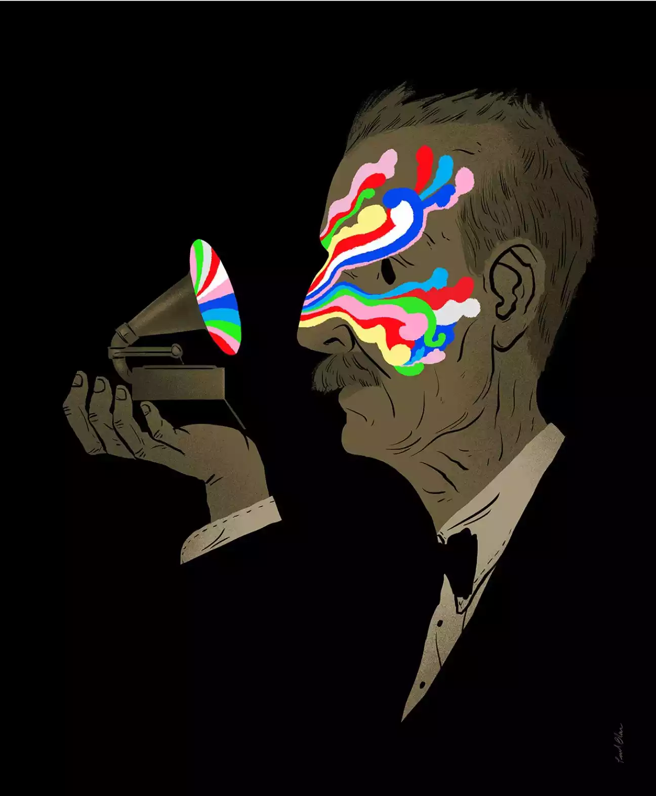
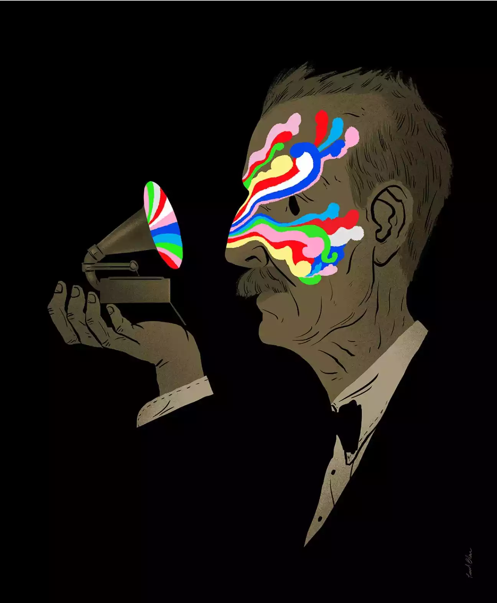

Paul Blow
Biografia
Take a minute to lose yourself in the illustrated world of Paul Blow, you won't be sorry. At first he draws you in with a beautiful or eye catching image, but often there's much more to it than that.
He's also telling you a story (or a joke) through his sublime work. A wickedly dry sense of humour runs through many of his best known images.
From the conceptual to the absurd, his versatile range sees him navigate seamlessly from high brow, to low and exist everywhere in between.
From Jackass to the Washington Post, Doordash to Harvard, Paul's talents have seen him work a hugely diverse client list across the worlds of editorial, publishing and advertising. Notable clients include Nike, The New York Times, Penguin Books and the Folio Society.
Gallery


 
